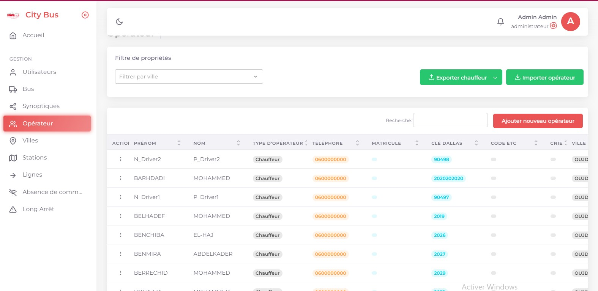
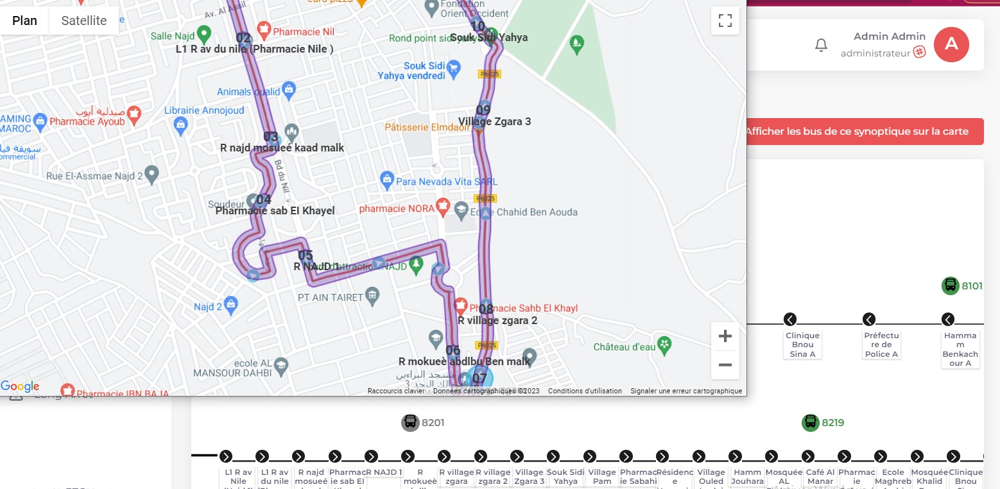
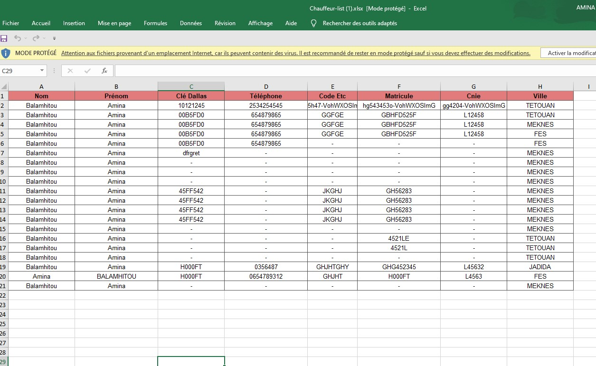

Fleet Management System is a project that allows effectivily manage vehicles and drivers. The system involves the use of devices to track real-time traffic, positions, temperature, fuel consumption and other key parameters related to a company's fleet.
The system also includes features to monitor driver behavior, such as speeding or hard braking. This information can be used to identify drivers who need additional training or coaching, and to improve overall driver safety.
Alerts are an essential part of the fleet management project. Managers can set up alerts for various events, such as when a vehicle enters or exits a specific area, when a driver exceeds the speed limit, or when a vehicle needs to be serviced. These alerts can be sent in real time via email, ftp, etc, using Laravel/php
Features developed by me
- Filtering of vehicles and drivers by alphanumeric and geographical fields
- export data in excel pdf csv format
- send notification
- Fix bugs
- Massive import of drivers
- Develop functionalities in the timeline
- etc
Lien de Github : lien
Lien plateforme de city bus : city bus platforme
Lien plateforme de city bus : Fleet Management platforme